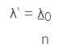

Exercícios
1- (PUC-RIO 2007) Um feixe de luz de comprimento de onda de 600 nm se propaga no vácuo até atingir a superfície de uma placa de vidro. Sabendo-se que o índice de refração do vidro é n = 1,5 e que a velocidade de propagação da luz no vácuo é de 3 x 108 m/s, o comprimento de onda e a velocidade de propagação da onda no vidro em nm e m/s, respectivamente, são: (Obs: 1 nm = 1 x 10-9 m).
(A) 200 nm ; 4 x 108m/s
(B) 200 nm ; 3 x 108m/s
(C) 200 nm ; 2 x 108m/s
(D) 400 nm ; 1 x 108m/s
(E) 400 nm ; 2 x 108m/s
Mostrar resposta
Alternativa correta: Letra E
Explicação:
Quando a luz passa de um meio para outro com índice de refração diferente e com o seu comprimento de onda alterado, utilizamos a relação a seguir para calcular o novo comprimento de onda:
Sendo que:
λ' é o comprimento de onda ao passar para um meio material;
λ0 é o comprimento de onda no vácuo;
n é o índice de refração do meio.
Substituindo os dados do problema na equação acima, temos que:

E a velocidade da onda é dada por:

2- (UFF 2009) Um raio luminoso, propagando-se num meio A, atinge a interface entre os meios A e B, conforme esquematizado na figura. As linhas tracejadas representam as frentes de onda associadas ao raio, e a distância entre elas é o comprimento de onda da luz incidente. Sabe-se que o tempo que a luz leva para percorrer uma certa distância em A é menor que o tempo que ela leva para percorrer a mesma distância em B.

A propagação da onda refratada no meio B é corretamente representada pelo diagrama:
(A)

(B)

(C)

(D)

(E)

Mostrar resposta
Alternativa correta: Letra B
3- (Enem 2014) Uma proposta de dispositivo capaz de indicar a qualidade da gasolina vendida em postos e, consequentemente, evitar fraudes, poderia utilizar o conceito de refração luminosa. Nesse sentido, a gasolina não adulterada, na temperatura ambiente, apresenta razão entre os senos dos raios incidente e refratado igual a 1,4. Desse modo, fazendo incidir o feixe de luz proveniente do ar com um ângulo fixo e maior que zero, qualquer modificação no ângulo do feixe refratado indicará adulteração no combustível.
Em uma fiscalização rotineira, o teste apresentou o valor de 1,9. Qual foi o comportamento do raio refratado?
(A) Mudou de sentido
(B) Sofreu reflexão total
(C) Atingiu o valor do ângulo limite
(D) Direcionou-se para a superfície de separação
(E) aproximou-se da normal à superfície de separação
Mostrar resposta
Alternativa correta: Letra E
4- (Enem 2012) Alguns povos indígenas ainda preservam suas tradições realizando a pesca com lanças, demonstrando uma notável habilidade. Para fisgar um peixe em um lago com águas tranquilas o índio deve mirar abaixo da posição em que enxerga o peixe. Ele deve proceder dessa forma porque os raios de luz:
(A) Refletidos pelo peixe não descrevem uma trajetória retilínea no interior da água
(B) Emitidos pelos olhos do índio desviam sua trajetória quando passam do ar para a água.
(C) Espalhados pelo peixe são refletidos pela superfície da água
(D) Emitidos pelos olhos do índio são espalhados pela superfície da água
(E) Refletidos pelo peixe desviam sua trajetória quando passam da água para o ar.
Mostrar resposta
Alternativa correta: Letra E
5- (UDESC 2017/2) Na Figura 5, um raio de luz vindo de um meio material (1), de índice de refração n1, incide na interface que o separa do meio material (2), de índice de refração n2. A seguir, o raio refratado incide na interface que separa os meios materiais (2) e (3), sendo n3 o índice de refração do meio material (3).

Analise as proposições em relação à óptica geométrica.
I. Se n1 = n3 então θ1 = θ3
II. Se n1 > n2 então θ1 > θ2
III. Se n2 > n3 então θ2 > θ3
IV. Se n1 > n2 então θ1 < θ2
V. Se n1 > n3 então θ1 > θ3
Assinale a alternativa correta.
(A) Somente as afirmativas II e III são verdadeiras.
(B) Somente as afirmativas II e V são verdadeiras.
(C) Somente as afirmativas III e V são verdadeiras.
(D) Somente as afirmativas I e II são verdadeiras.
(E) Somente as afirmativas I e IV são verdadeiras.
Mostrar resposta
Alternativa correta: Letra E
6- (UFRGS 2015) Na figura abaixo, um raio luminoso i, propagando-se no ar, incide radialmente sobre uma placa semicircular de vidro.

Assinale a alternativa que melhor representa a trajetória dos raios r1 e r2 refratados, respectivamente, no vidro e no ar.
(A)

(B)

(C)

(D)

(E)

Mostrar resposta
Alternativa correta: Letra A
7- (UFT) Um raio de luz monocromático propaga-se de um meio A para um meio B e forma com a normal, à superfície de separação, ângulos de 30º e 45º, respectivamente. O meio B é o ar, que possui índice de refração igual a 1 e por onde a luz propaga-se com velocidade de 3,0 . 108 m/s. Portanto, a velocidade de propagação da luz no meio A será de: (dados: sen 30º = 1/2; sen 45º = √2/2).
(A) 1,8 . 108 m/s
(B) 2,0 . 108 m/s
(C) √2 . 108 m/s
(D) 1,5√2 . 108 m/s
(E) 3,0√2 . 108 m/s
Mostrar resposta
Alternativa correta: Letra D
Explicação:
Por meio da lei de Snell, pode-se determinar o índice de refração do meio A:


A velocidade da luz no meio A pode ser determinada a partir da definição de índice de refração:

8- Marque a alternativa correta a respeito do fenômeno da refração da luz.
(A) A refração é caracterizada pela mudança de meio de propagação da luz, que sempre ocasiona aumento em sua velocidade.
(B) O índice de refração é definido como sendo a razão entre a velocidade da luz em um meio qualquer e a velocidade da luz no vácuo.
(C) A lei de Snell só pode ser aplicada quando a refração ocorre entre o ar e um meio qualquer.
(D) Na passagem do maior para o menor índice de refração, a luz sofre aumento em sua velocidade.
(E) Na passagem do menor para o maior índice de refração, a luz sofre aumento em sua velocidade.
Mostrar resposta
Alternativa correta: Letra D
9- Um raio de luz monocromático incide na superfície de separação entre dois meios com índice de refração igual a 1,5 e 2,0, passando do menor para o maior índice. Determine o ângulo de refração sabendo que o ângulo de incidência é de 60°.
Dados: sen60° = 0,87; cos60° = 0,50
(A) 36°
(B) 48°
(C) 41°
(D) 65°
(E) 55°
Mostrar resposta
Alternativa correta: Letra C
O ângulo de refração pode ser determinado a partir da lei de Snell.


10- A luz amarela se propaga em um determinado vidro com velocidade de 200.000 km/s. Sendo 300.000 km/s a velocidade da luz no vácuo, determine o índice de refração absoluto do vidro para a luz amarela:
(A) n = 1,1
(B) n = 1,2
(C) n = 1,3
(D) n = 1,4
(E) n = 1,5
Mostrar resposta
Alternativa correta: Letra E
Explicação: